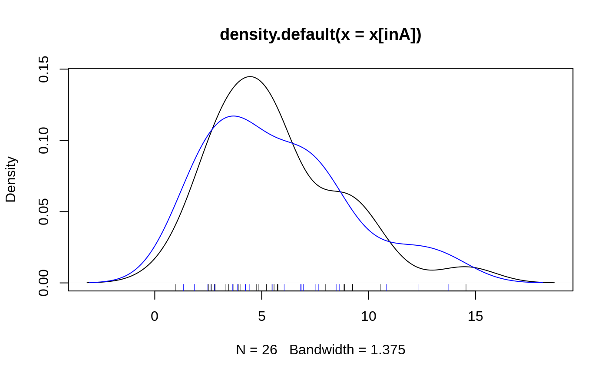

A series of test/training partitions are created using
createDataPartition while createResample creates one or more
bootstrap samples. createFolds splits the data into k groups
while createTimeSlices creates cross-validation split for series data.
groupKFold splits the data based on a grouping factor.
createDataPartition(y, times = 1, p = 0.5, list = TRUE, groups = min(5, length(y))) createFolds(y, k = 10, list = TRUE, returnTrain = FALSE) createMultiFolds(y, k = 10, times = 5) createTimeSlices(y, initialWindow, horizon = 1, fixedWindow = TRUE, skip = 0) groupKFold(group, k = length(unique(group))) createResample(y, times = 10, list = TRUE)
| y | a vector of outcomes. For |
|---|---|
| times | the number of partitions to create |
| p | the percentage of data that goes to training |
| list | logical - should the results be in a list ( |
| groups | for numeric |
| k | an integer for the number of folds. |
| returnTrain | a logical. When true, the values returned are the sample
positions corresponding to the data used during training. This argument
only works in conjunction with |
| initialWindow | The initial number of consecutive values in each training set sample |
| horizon | the number of consecutive values in test set sample |
| fixedWindow | logical, if |
| skip | integer, how many (if any) resamples to skip to thin the total amount |
| group | a vector of groups whose length matches the number of rows in the overall data set. |
A list or matrix of row position integers corresponding to the
training data. For createTimeSlices subsamples are named by the end
index of each training subsample.
For bootstrap samples, simple random sampling is used.
For other data splitting, the random sampling is done within the levels of
y when y is a factor in an attempt to balance the class
distributions within the splits.
For numeric y, the sample is split into groups sections based on
percentiles and sampling is done within these subgroups. For
createDataPartition, the number of percentiles is set via the
groups argument. For createFolds and createMultiFolds,
the number of groups is set dynamically based on the sample size and
k. For smaller samples sizes, these two functions may not do
stratified splitting and, at most, will split the data into quartiles.
Also, for createDataPartition, very small class sizes (<= 3) the
classes may not show up in both the training and test data
For multiple k-fold cross-validation, completely independent folds are
created. The names of the list objects will denote the fold membership
using the pattern "Foldi.Repj" meaning the ith section (of k) of the jth
cross-validation set (of times). Note that this function calls
createFolds with list = TRUE and returnTrain = TRUE.
Hyndman and Athanasopoulos (2013)) discuss rolling forecasting origin
techniques that move the training and test sets in time.
createTimeSlices can create the indices for this type of splitting.
For Group k-fold cross-validation, the data are split such that no group
is contained in both the modeling and holdout sets. One or more group
could be left out, depending on the value of k.
http://topepo.github.io/caret/data-splitting.html
Hyndman and Athanasopoulos (2013), Forecasting: principles and practice. https://www.otexts.org/fpp
#> $Resample1 #> [1] 1 5 6 7 9 11 12 14 16 17 21 22 23 26 27 29 35 37 43 45 46 48 50 51 53 #> [26] 55 56 59 60 62 64 66 69 70 71 72 73 75 76 78 79 80 81 82 84 85 87 91 93 94 #> #> $Resample2 #> [1] 3 7 8 9 10 14 17 20 21 24 25 26 29 31 32 33 37 40 43 46 47 50 51 52 55 #> [26] 56 57 59 62 63 64 65 66 67 71 72 73 74 75 76 78 79 80 84 86 87 90 91 92 95 #>createResample(oilType, 2)#> $Resample1 #> [1] 1 2 2 2 2 3 5 5 5 7 7 9 9 11 12 14 15 16 18 18 20 21 21 22 24 #> [26] 25 26 27 30 31 31 32 32 34 34 35 35 36 36 36 36 37 37 40 40 41 42 42 43 43 #> [51] 45 47 48 49 49 50 52 55 56 56 57 58 58 59 59 59 59 60 61 64 64 68 71 73 73 #> [76] 73 73 73 76 77 79 79 79 81 83 85 85 86 87 87 92 93 94 94 95 96 #> #> $Resample2 #> [1] 1 2 4 5 7 8 8 8 11 11 13 16 17 18 19 19 20 21 24 25 26 29 32 34 35 #> [26] 35 36 37 38 39 40 40 41 42 43 44 45 46 47 47 47 48 52 54 55 57 58 60 60 60 #> [51] 61 61 62 62 62 64 64 64 65 66 67 68 68 68 68 70 71 71 72 72 72 73 73 74 75 #> [76] 80 80 80 83 85 85 86 86 86 87 87 89 90 91 91 92 92 92 95 95 96 #>createFolds(oilType, 10)#> $Fold01 #> [1] 7 13 23 40 53 70 80 93 96 #> #> $Fold02 #> [1] 11 14 17 28 31 47 66 87 #> #> $Fold03 #> [1] 12 37 39 51 62 74 81 82 86 92 94 #> #> $Fold04 #> [1] 9 49 54 58 71 75 76 83 #> #> $Fold05 #> [1] 18 20 21 26 60 63 64 84 #> #> $Fold06 #> [1] 2 19 24 27 29 33 45 52 65 72 95 #> #> $Fold07 #> [1] 4 8 25 30 32 35 36 38 48 55 91 #> #> $Fold08 #> [1] 1 3 5 42 44 57 69 79 89 #> #> $Fold09 #> [1] 16 34 41 50 56 59 68 73 78 88 #> #> $Fold10 #> [1] 6 10 15 22 43 46 61 67 77 85 90 #>createFolds(oilType, 5, FALSE)#> [1] 4 4 3 5 1 1 3 2 4 3 3 1 2 4 4 5 3 1 3 5 4 3 2 5 1 2 3 2 4 1 3 5 1 1 2 5 1 2 #> [39] 1 5 5 1 1 4 2 4 3 2 3 1 5 2 4 2 5 3 1 4 3 3 5 2 4 5 3 2 4 3 1 2 2 5 3 2 4 1 #> [77] 3 3 5 4 2 4 5 1 2 1 4 2 4 1 4 5 5 5 2 5#> $Fold01 #> [1] 11 12 #> #> $Fold02 #> [1] 10 14 #> #> $Fold03 #> [1] 2 21 #> #> $Fold04 #> [1] 3 19 #> #> $Fold05 #> [1] 6 9 17 #> #> $Fold06 #> [1] 5 7 #> #> $Fold07 #> [1] 1 16 #> #> $Fold08 #> [1] 18 20 #> #> $Fold09 #> [1] 4 13 #> #> $Fold10 #> [1] 8 15 #>createTimeSlices(1:9, 5, 1, fixedWindow = FALSE)#> $train #> $train$Training5 #> [1] 1 2 3 4 5 #> #> $train$Training6 #> [1] 1 2 3 4 5 6 #> #> $train$Training7 #> [1] 1 2 3 4 5 6 7 #> #> $train$Training8 #> [1] 1 2 3 4 5 6 7 8 #> #> #> $test #> $test$Testing5 #> [1] 6 #> #> $test$Testing6 #> [1] 7 #> #> $test$Testing7 #> [1] 8 #> #> $test$Testing8 #> [1] 9 #> #>createTimeSlices(1:9, 5, 1, fixedWindow = TRUE)#> $train #> $train$Training5 #> [1] 1 2 3 4 5 #> #> $train$Training6 #> [1] 2 3 4 5 6 #> #> $train$Training7 #> [1] 3 4 5 6 7 #> #> $train$Training8 #> [1] 4 5 6 7 8 #> #> #> $test #> $test$Testing5 #> [1] 6 #> #> $test$Testing6 #> [1] 7 #> #> $test$Testing7 #> [1] 8 #> #> $test$Testing8 #> [1] 9 #> #>createTimeSlices(1:9, 5, 3, fixedWindow = TRUE)#> $train #> $train$Training5 #> [1] 1 2 3 4 5 #> #> $train$Training6 #> [1] 2 3 4 5 6 #> #> #> $test #> $test$Testing5 #> [1] 6 7 8 #> #> $test$Testing6 #> [1] 7 8 9 #> #>createTimeSlices(1:9, 5, 3, fixedWindow = FALSE)#> $train #> $train$Training5 #> [1] 1 2 3 4 5 #> #> $train$Training6 #> [1] 1 2 3 4 5 6 #> #> #> $test #> $test$Testing5 #> [1] 6 7 8 #> #> $test$Testing6 #> [1] 7 8 9 #> #>createTimeSlices(1:15, 5, 3)#> $train #> $train$Training05 #> [1] 1 2 3 4 5 #> #> $train$Training06 #> [1] 2 3 4 5 6 #> #> $train$Training07 #> [1] 3 4 5 6 7 #> #> $train$Training08 #> [1] 4 5 6 7 8 #> #> $train$Training09 #> [1] 5 6 7 8 9 #> #> $train$Training10 #> [1] 6 7 8 9 10 #> #> $train$Training11 #> [1] 7 8 9 10 11 #> #> $train$Training12 #> [1] 8 9 10 11 12 #> #> #> $test #> $test$Testing05 #> [1] 6 7 8 #> #> $test$Testing06 #> [1] 7 8 9 #> #> $test$Testing07 #> [1] 8 9 10 #> #> $test$Testing08 #> [1] 9 10 11 #> #> $test$Testing09 #> [1] 10 11 12 #> #> $test$Testing10 #> [1] 11 12 13 #> #> $test$Testing11 #> [1] 12 13 14 #> #> $test$Testing12 #> [1] 13 14 15 #> #>createTimeSlices(1:15, 5, 3, skip = 2)#> $train #> $train$Training05 #> [1] 1 2 3 4 5 #> #> $train$Training08 #> [1] 4 5 6 7 8 #> #> $train$Training11 #> [1] 7 8 9 10 11 #> #> #> $test #> $test$Testing05 #> [1] 6 7 8 #> #> $test$Testing08 #> [1] 9 10 11 #> #> $test$Testing11 #> [1] 12 13 14 #> #>createTimeSlices(1:15, 5, 3, skip = 3)#> $train #> $train$Training5 #> [1] 1 2 3 4 5 #> #> $train$Training9 #> [1] 5 6 7 8 9 #> #> #> $test #> $test$Testing5 #> [1] 6 7 8 #> #> $test$Testing9 #> [1] 10 11 12 #> #>#> groups #> a b c d #> 6 5 4 5#> $Fold1 #> #> b c d #> 5 4 5 #> #> $Fold2 #> #> a c d #> 6 4 5 #> #> $Fold3 #> #> a b d #> 6 5 5 #> #> $Fold4 #> #> a b c #> 6 5 4 #>